✓
QA Pipeline: thiết kế tool Tool web để tester thêm app, lấy locator, import Excel test case, cho AI gen script WebdriverIO, chạy trên iOS Simulator hoặc Android và xem report, không cần viết code. Ảnh dưới đây chụp từ bản demo đang chạy thật, xếp theo luồng sử dụng.
iOS + Android Design system ikqa · IBM Plex Bản demo ngày 25/10/2026 18 màn hình
1 · Thêm app .app / .apk 2 · Lấy locator Ghi lại / AI khám phá 3 · Import Excel format automation v2 4 · Gen script AI · review tuỳ chọn 5 · Run bước + thiết bị trực tiếp 6 · Kết quả report · chạy lại 7 · Lịch sử Test Runs · cài đặt
1 · Thêm app 2 · Lấy locator 3 · Test Cases 4 · Scripts 5 · Run 6 · Kết quả 7 · Lịch sử & cài đặt
01
Apps và Thêm app
Mỗi app có locator map, test case, script và lịch sử run riêng. Thanh bên luôn hiện thiết bị đang rảnh hay đang chạy job.
/apps
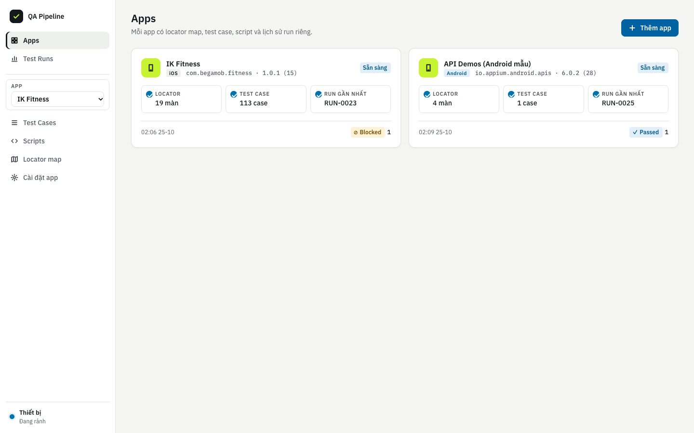
Danh sách app Card mỗi app: nhãn iOS / Android, bundle id, version, trạng thái chuẩn bị. 3 ô tiến độ Locator → Test case → Run gần nhất, bấm để đi tới bước đó. /apps · drawer Thêm app
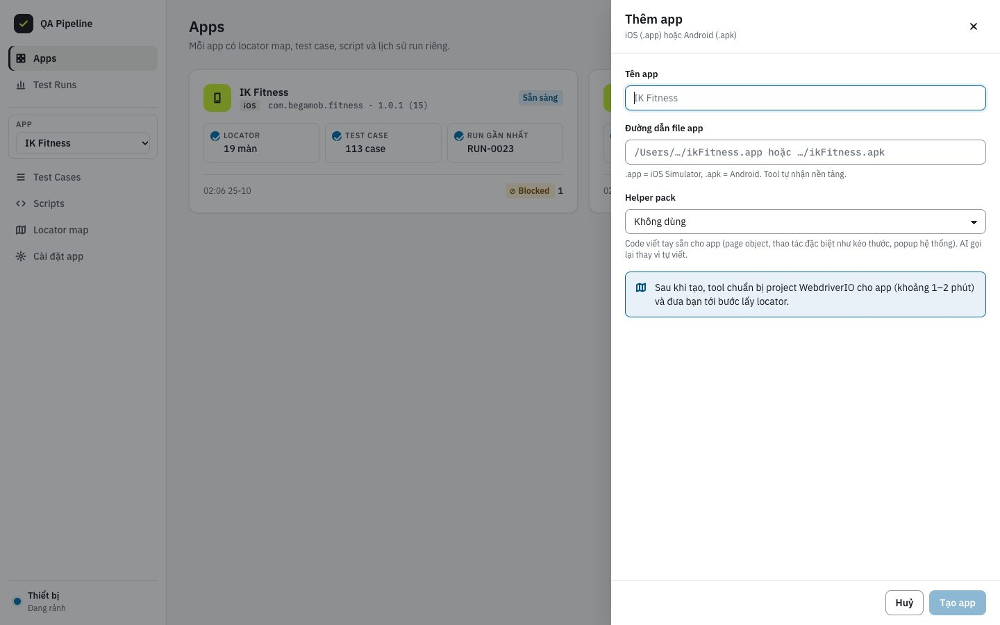
Thêm app File .app (iOS Simulator) hoặc .apk (Android): tool tự nhận nền tảng, đọc bundle id / package, version. Helper pack (code viết tay riêng của app) chỉ hiện pack cùng nền tảng. Tạo xong: tool dựng project WebdriverIO riêng + cài report chung.
02
Lấy locator
Hai chế độ đổ vào cùng một locator map. Tool tự nhận lại màn đã có, không tạo màn trùng, và tự xử lý popup hệ thống của iOS / Android.
Locator map · drawer Lấy locator
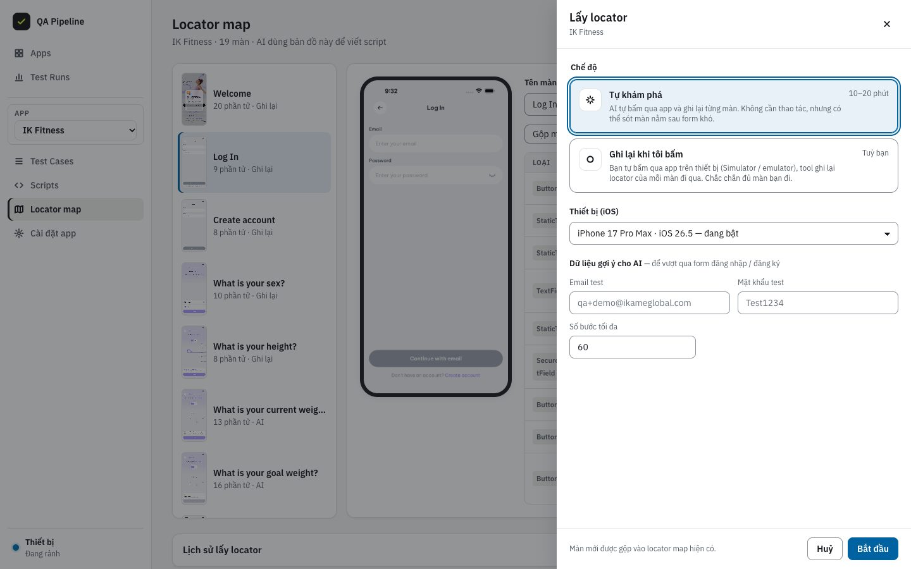
Chọn chế độ Tự khám phá: AI tự bấm qua app; cho trước email / mật khẩu test, số bước tối đa.Ghi lại khi tôi bấm: tester bấm trên Simulator / emulator, tool ghi từng màn./apps/ik-fitness/capture/…
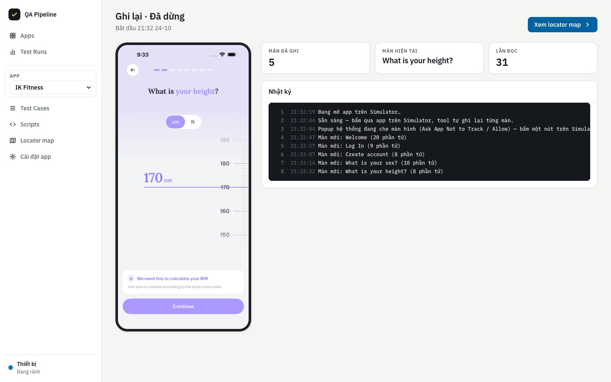
iOS Đang ghi lạiẢnh thiết bị trực tiếp, số màn đã ghi, màn hiện tại, nhật ký. Popup hệ thống che màn hình → nhắc tester đóng. /apps/api-demos-android-mau/capture/…
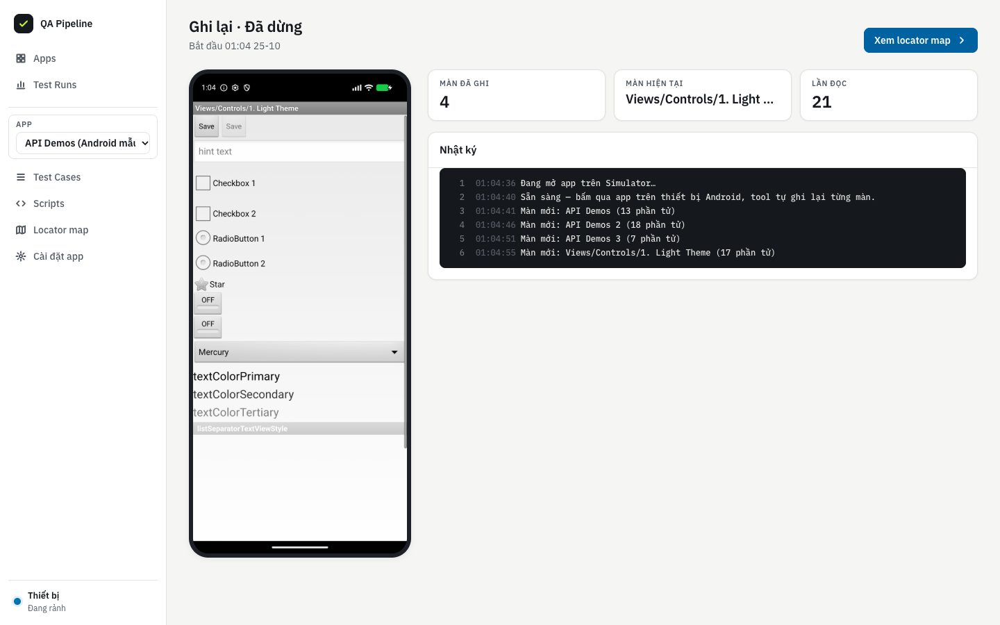
Android Lấy locator trên emulatorLocator Android: ~content-desc → resourceId → chữ hiển thị. Hộp xin quyền Android: tự bấm "Don't allow" khi AI khám phá. /apps/ik-fitness/locators
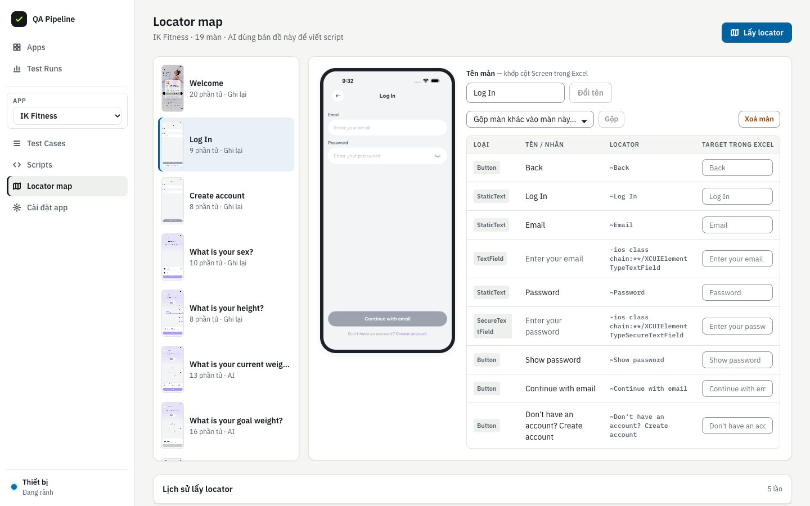
Locator map Danh sách màn + ảnh; rê chuột lên dòng → khoanh phần tử trên ảnh. Đổi tên màn cho khớp cột Screen trong Excel, gộp / xoá màn, đặt "Target trong Excel". Tên cũ giữ làm alias để script đã gen không vỡ.
03
Test Cases
Import Excel format automation v2, lọc theo file / trạng thái script, chọn case để Generate hoặc Run.
/apps/ik-fitness/cases?file=authentication-automation
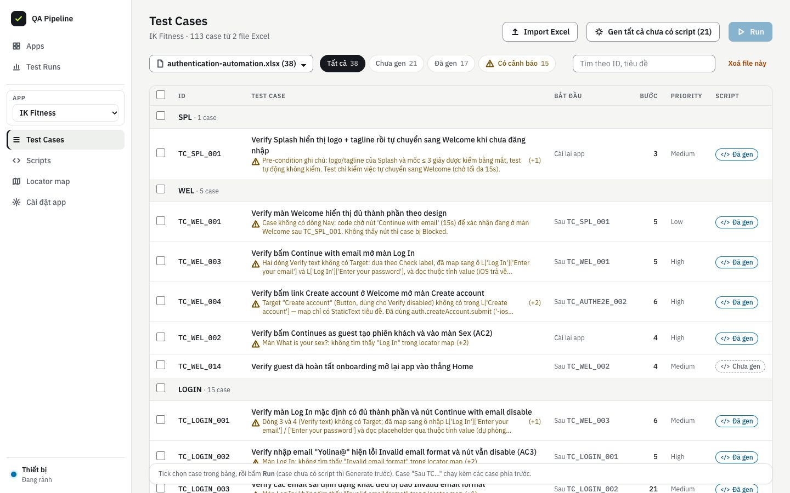
Danh sách test case Dropdown lọc theo file Excel, chip lọc trạng thái (Chưa gen, Đã gen, Gen lỗi, Cần gen lại, Có cảnh báo), ô tìm. Nhóm theo module; cột Bắt đầu cho biết "Cài lại app" hay "Sau TC_x" (chuỗi Tiếp nối). Nút Import Excel (kéo thả), Gen tất cả chưa có script, Generate (n), Run (n); xoá case / file / tất cả có xem trước.
04
Scripts (review tuỳ chọn)
Một file Excel là một file .e2e.js; mỗi case một đoạn code do AI viết. Review không bắt buộc để chạy.
/apps/ik-fitness/scripts?file=authentication-automation&case=TC_CRE_004
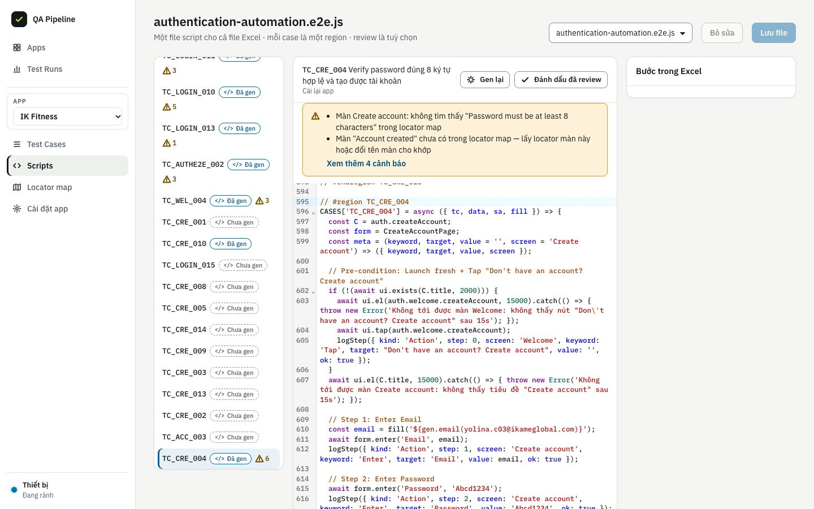
Xem / sửa code Trái: danh sách case + số cảnh báo. Giữa: editor tự cuộn tới đoạn của case. Phải: các bước trong Excel. Cảnh báo khi gen (thiếu locator, chỗ AI tự đoán) hiện trên code; Gen lại, Đánh dấu đã review. Lưu tay có kiểm cú pháp; file vừa đổi trên server thì không ghi đè phần đang sửa.
05
Run
Kiểm tra trước khi chạy, rồi theo dõi trực tiếp: bước đang chạy cạnh màn hình thiết bị; Tạm dừng không cắt giữa case.
Test Cases · drawer Run config
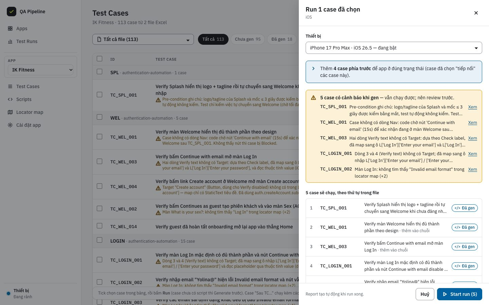
Run config Chọn thiết bị theo nền tảng app (simulator / emulator đang bật lên đầu). Case "Tiếp nối" tự kéo theo case phía trước; case chưa có script liệt kê kèm nút gen ngay. Case có cảnh báo: liệt kê từng case + link Xem. /runs/RUN-0014 · đang chạy
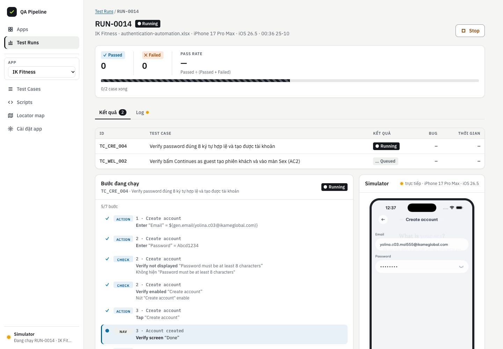
iOS Đang chạyBước đang chạy: ✓ xong · ● đang chạy · ✕ lệch (giá trị thật / mong đợi) · ○ chưa tới. Màn hình Simulator làm mới mỗi giây; Log ở tab riêng. /runs/RUN-0022 · đang chạy
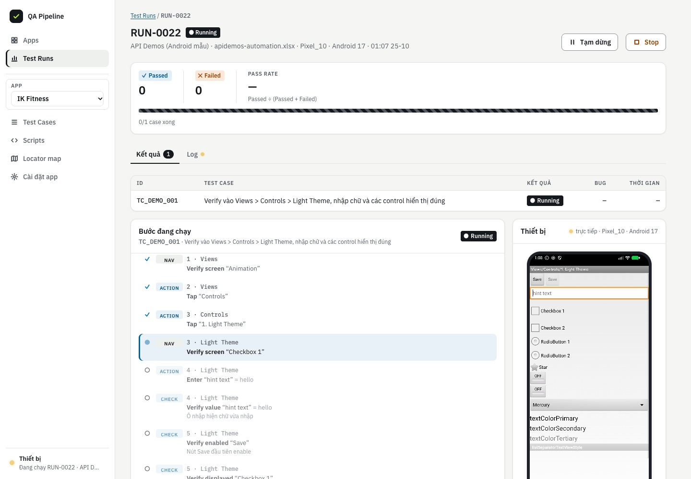
Android Đang chạy trên emulatorCùng giao diện; ảnh thiết bị lấy qua adb. /runs/RUN-0016 · tạm dừng
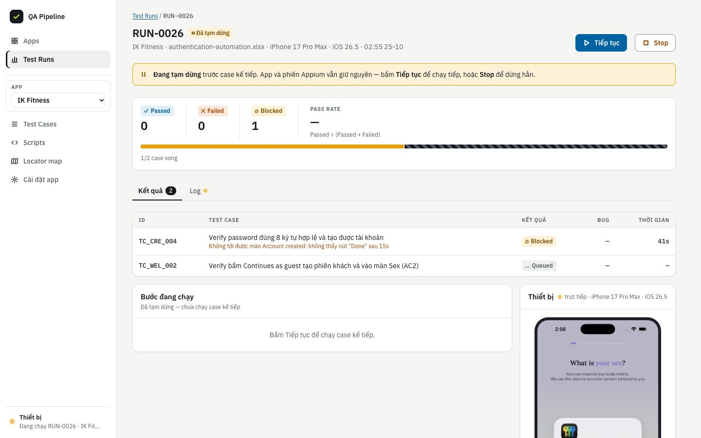
Tạm dừng / Tiếp tục / Stop Tạm dừng chờ case hiện tại xong, giữ phiên Appium và trạng thái app. Stop hỏi xác nhận; dùng được cả khi đang tạm dừng.
06
Kết quả và report
Kết quả từng case, lý do Blocked / Failed ngay trong bảng, chạy lại case chọn riêng, report chung của team nhúng sẵn.
/runs/RUN-0014 · đã xong
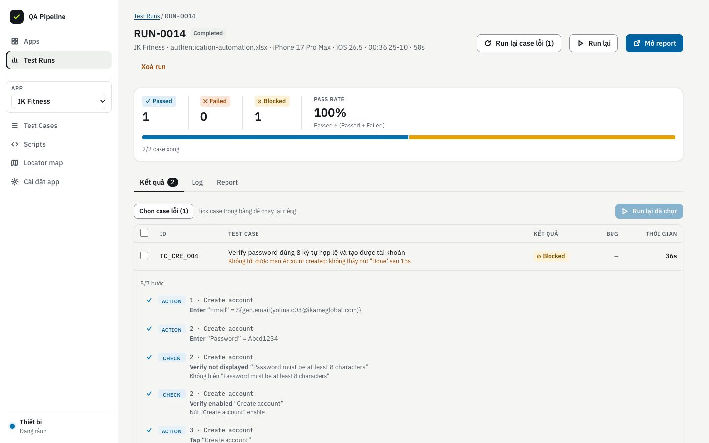
Run đã xong Thống kê Passed / Failed / Blocked, pass rate, thanh tiến độ. Bấm một dòng: xem lại từng bước, case Blocked hiện ⊘ đúng ở bước bị dừng. Run lại · Run lại case lỗi · Mở report · Xoá run. /runs/RUN-0014 · chọn case chạy lại
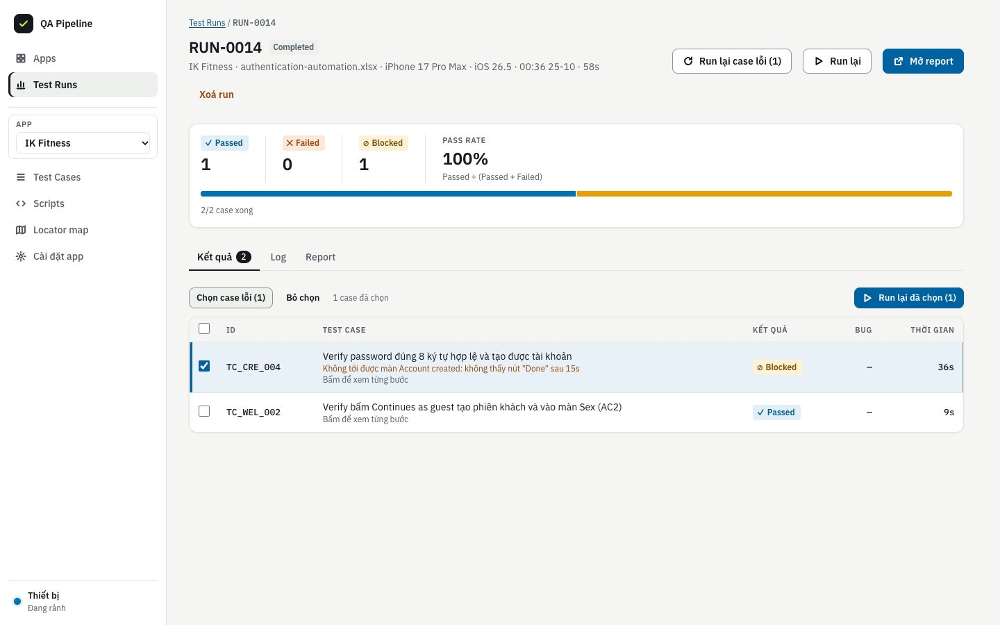
Chạy lại case chọn riêng Tick từng case, hoặc "Chọn case lỗi" rồi bỏ bớt → "Run lại đã chọn". /runs/RUN-0014 · tab Report
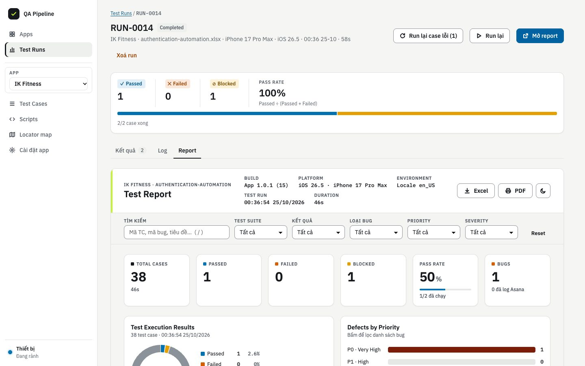
Report chung của team bug-report.html (skill test-report): bug khoanh đỏ, lọc, dashboard Function / UI, xuất Excel / PDF, log Asana. Kết quả ghi ngược vào bản copy Excel trong tool.
07
Lịch sử và cài đặt
/runs
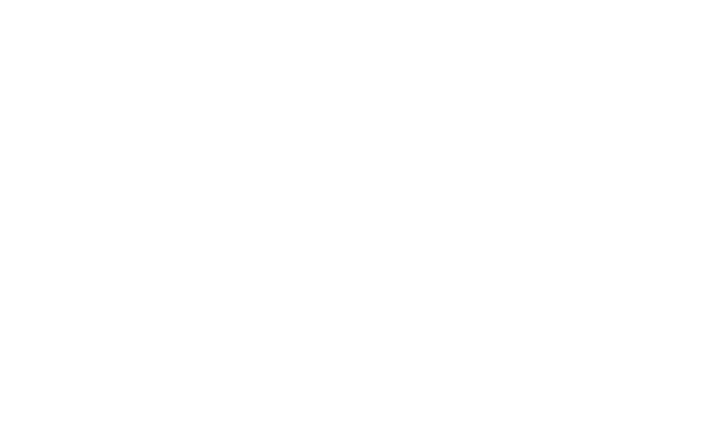
Test Runs Mỗi run giữ report riêng; run đang chạy có nút Theo dõi + tiến độ. Run lại từng dòng; tick để xoá, xoá run cũ hơn 7 ngày. /apps/ik-fitness/settings
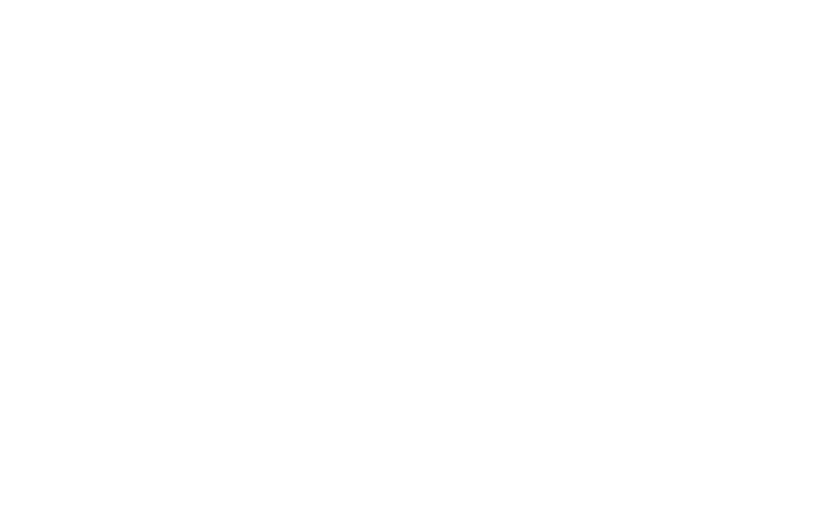
Cài đặt app Biến môi trường truyền vào mỗi lần Run (${env.X}, ALLOW_ACCOUNT_CREATE…). Project WebdriverIO: trạng thái, Chuẩn bị lại.
Nguồn: bản demo qa-pipeline-demo chạy trên iPhone 17 Pro Max (iOS 26.5) và Pixel_10 (Android 17). Thiết kế gốc: canvas "AI Test Automation Tool"; spec bàn giao: tài liệu "QA Pipeline — spec bản thật".